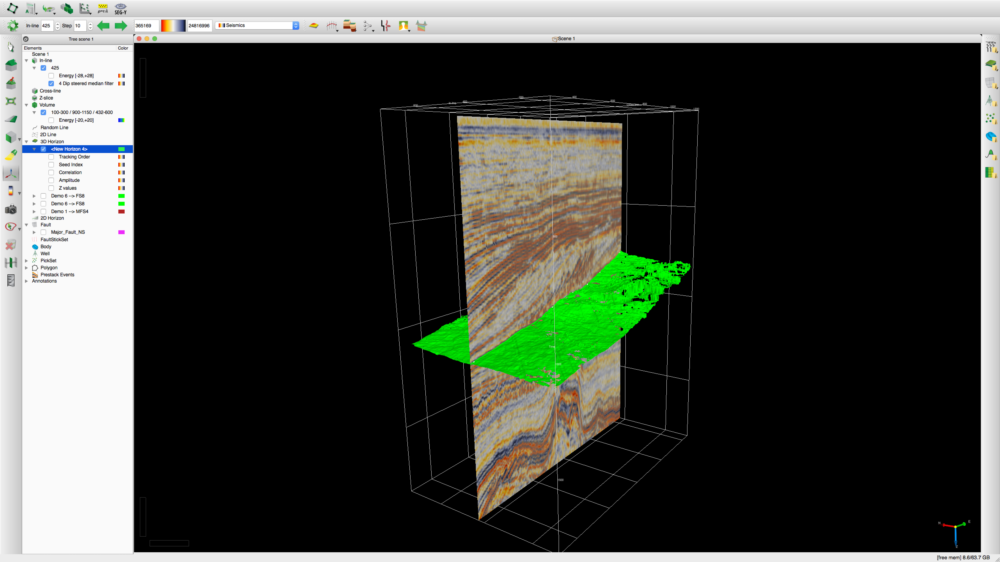
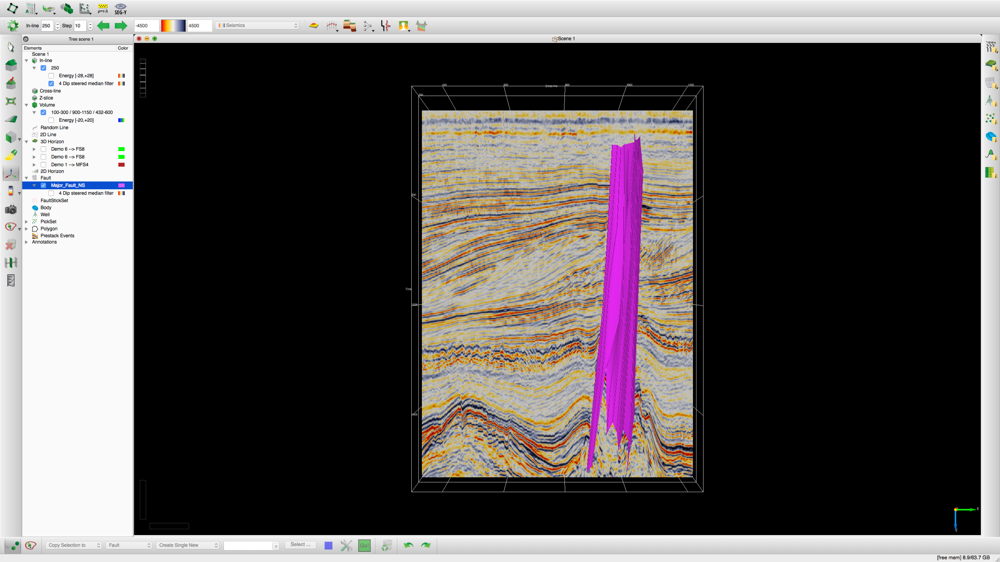
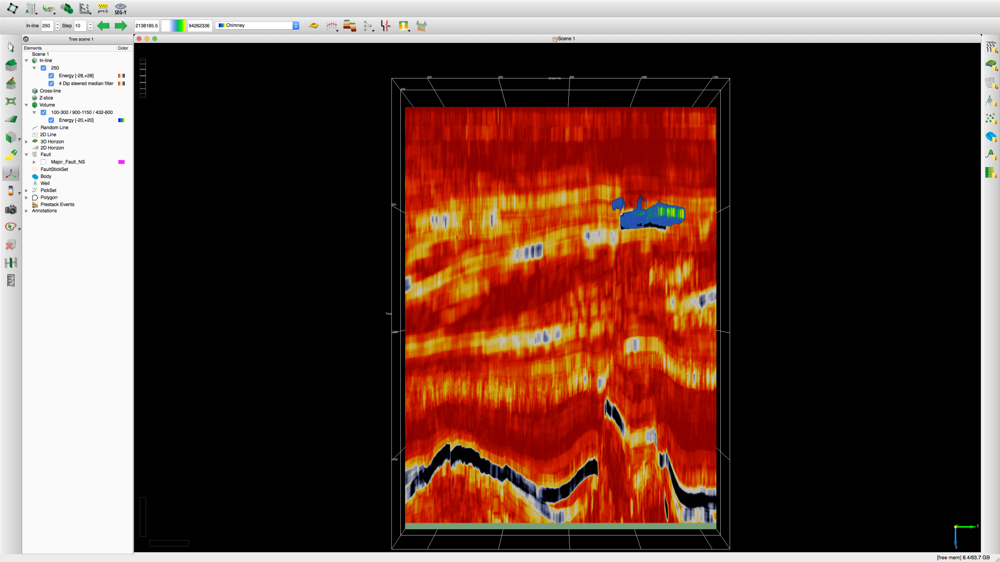
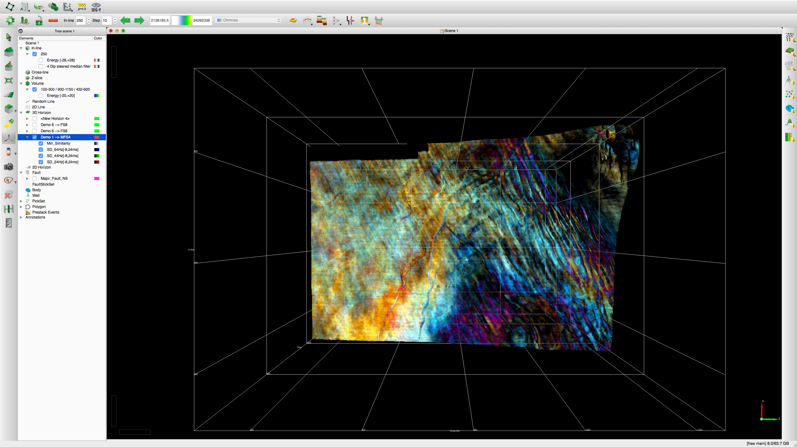
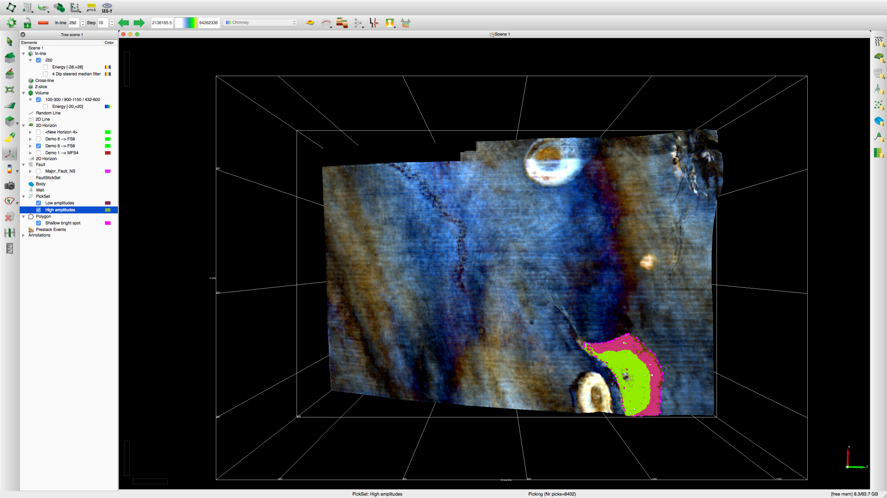
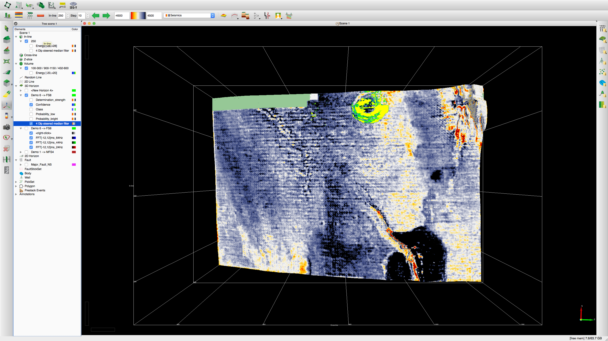

OpendTect is an open-source geoscience interpretation and visualization software created by dGB Earth Sciences. The F3 demo survey is from oil/gas exploration in the Dutch North Sea, and is publically available on the OpendTect website Open Seismic Repository. The data consists of dip-steered median filtered 3D sesimic data, several picked 3D horizons and 4 vertical wells. I worked through the open-source portion of the training manual, and created several images and QuickTime Player videos illustrating some of the functionality of the OpendTect software, and to show off my familiarity with the software.
A Google Map showing the location of the F3 Demo dataset, as shown by the white-highlighted brown box.
1.2 Set up a Survey and Load Data
In the tutorial, it is shown how you can set up a new scene by scanning the SEGY files from the original survey. I've done this with similar data for my thesis. When importing horizons, the information is commonly stored in ASCII format, extension ".xyt", where the first two columns contain location info and the third contains depth in milliseconds (ms). Below I've included an image of the first 3D horizon you import into the F3 Demo Scene.
Scene showing the FS6 Horizon.
1.3 Basic Interaction
Once the scene is set up, the seismic data can be loaded in. Best practice is to pre-load all of the seismic data if the computer you are working on has sufficient memory to do so. Once the seismic data is loaded into the scene, the inline can be manipulated from the Slice Position Toolbar or using your mouse in the scene.
Scene with 4 dip-steered median filtered seismic inline displayed.
1.4 Seismic Interpretation
After initial inspection of the data, further analysis can be performed. The tutorial outlines how to tie well data to seismic in order to determine which sesimic events occur to which geologic markers. You can also pick seismic horizons in either the 3D or 2D viewer. The first image below is illustrating the functionality of the 3D Autotracker. Also, both large scale and small scale faults can be identified and picked from the offsets in the layers of the seismic data. The second image below shows the result of tracking one of the major faults through multiple inline positions of the dip-steered median filtered seismic data. Finally, you can convert the z-axis of the seismic data from time to depth if you have a velocity conversion (ASCII file with format X-Y-Time-Vrms). The seismic data can then be converted for inlines as shown in the third image below, as well as for volumes and horizons.
Inline displaying dip steered median filtered seismic data with 3D auto track generated horizon in green.Inline displaying dip steered median filtered seismic data with picked fault plane surface in pink.(Left) Dip-steered median filtered seismic inline with z-axis in time (ms). (Right) The same inline converted so that the z-axis is in depth (m).
1.5 Attribute Analysis and Cross-plots
Seismic attributes are measured, computed or implied quantities obtained from the seismic data for the purposes of data visualization and integration in 2D and 3D. In the tutorial, the first example centers around bright spot detection and visualization. Bright spots are associated with hydrocarbons, and result because the different acoustic energy of the hydrocarbons vs. the surrounding sedimentary layers. The first image below shows first the dip-steered median filtered seismic inline, then the acoustic energy attribute inline, then the energy attribute volume of a bright spot situated at ~500 ms depth.
The second example involves spectral decomposition to produce a continuous time-frequency spectrum of a seismic trace using either a fast fourier transform or continuous waveform transformation. The resulting attribute can provide addtional information about stratigraphic/structural features or hydrocarbon attenuation/thickness along an evaluated horizon. The second image below shows how you can pick out the main three frequencys present in the dip-steered median filtered seismic data (24, 44, 64Hz) and then turn the resultant spectral decomposition results into layers to be displayed in the 3D viewer. There you can identify several paleostream channels below the interpreted horizon as well as the major fault trace as observed in the fault plane example.
Attributes can be cross-plot against each other in order to illustrate what seismic features cause the different major frequencies. The third image below shows how the spectral decomposition results from the 24 and 44Hz frequencies when cross-plot against each other, actually result from different regions within the bright spot on the MFS4 horizon. The 44Hz frequencies result from the middle of the bright spot, and the 24Hz frequencies result from the exterior. This seems to imply the hydrocarbons are thicker in the middle than the edge of the bright spot. All of the attributes that can be collected from well data can be cross-plot against each other to look for trends in that data as well. Finally, the tutorial illustrates how you can perform a Bayesian inversion on the spectral decomposition attribute to look and see if other similar frequencies (24, 44Hz) to the first bright spot we selected are present on the same evaluated horizon. The fourth image shows an example of the results of the Bayesian inversion plotted in the 3D viewer.
Inline displaying the attribute seismic energy in red/yellow and seismic energy volume in blue/green.3D Seismic horizon with attribute spectral decomposition view looking down the z-axis.3D Seismic horizon with polygon drawn around one of the hydrocarbon bright spots and the 24Hz and 44Hz frequencies plotted with view looking down the z-axis.
3D Seismic horizon with attribute of confidence of match calculated from the Bayesian inversion in green/yellow with view looking down the z-axis.
{kind=link}
{kind=link}
{kind=link}
{kind=link}
{kind=link}
{kind=link}